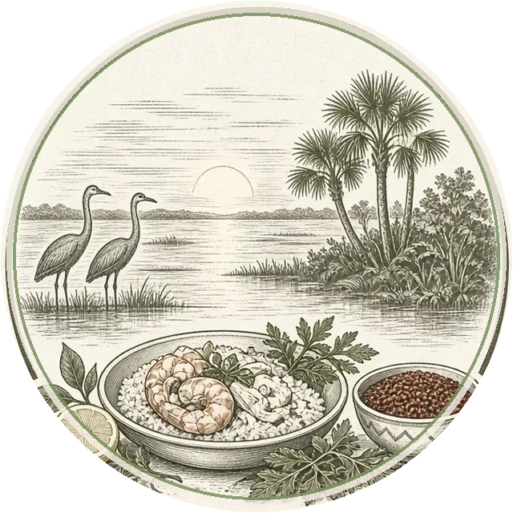
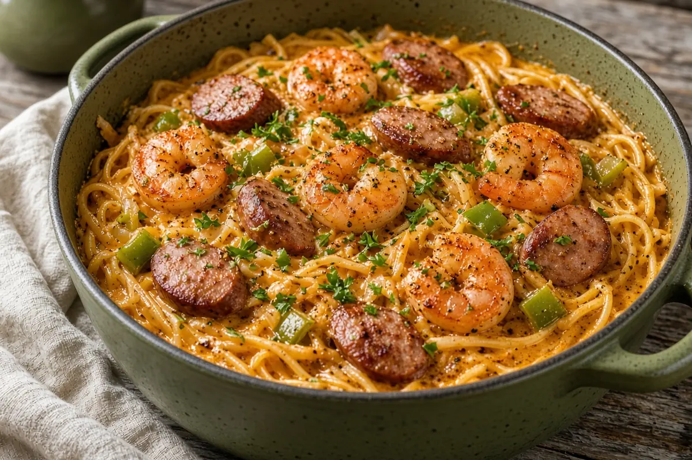
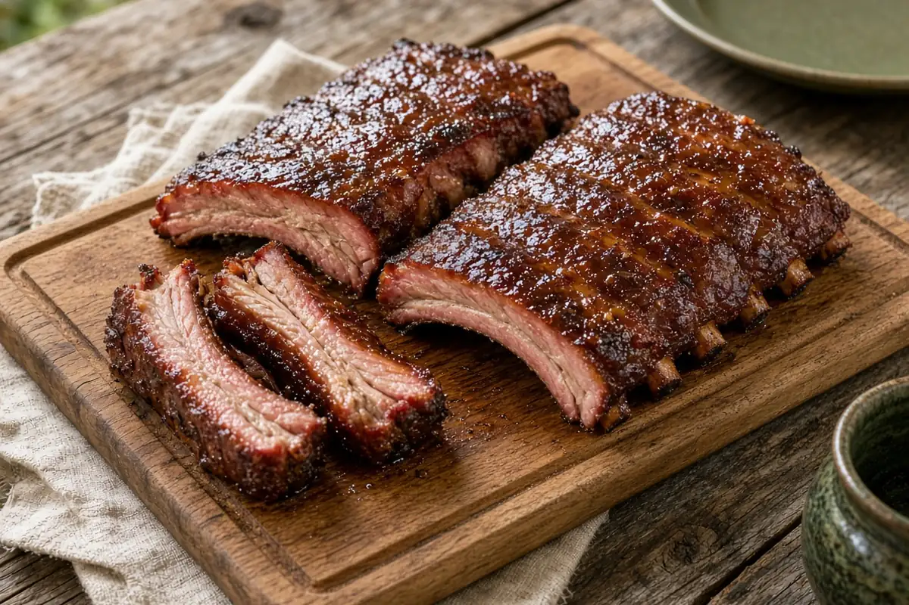
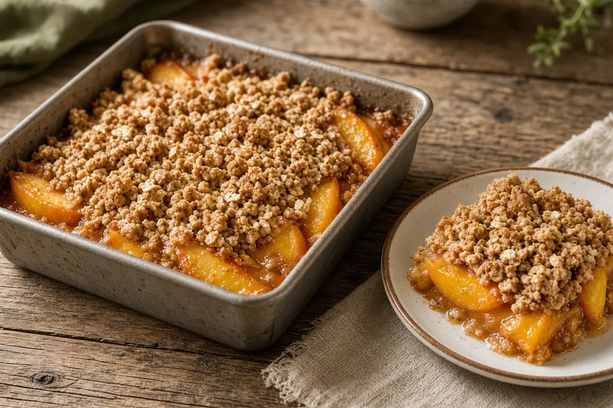

Brandon Carroll
Carroll Lowcountry Table

Recipes from our Lowcountry table — weeknight plates and weekend cooks.
What are we cooking?
How much time do you have?
Or pick a kind of meal
Meal calendar → Put dinners on the days you'll cook them (saved on this device).
From the table this week

Weekday · 35 minOne-Pot Cajun Shrimp and Sausage Pasta
Weekend pit · 6 hr3-2-1 Baby Back Ribs with Brown Sugar and Honey Wrap
Dessert · 1 hr 36 minPeach Crumble
Photos are AI-generated illustrations; your dish may vary.